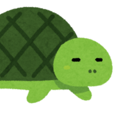

データカウンターの履歴
左が新しい。RBに当たるまで入力
現在 最後の信号からのハマリ
CZ/B RBより後の信号
RB ラッシュ初当り
空のマスは数えません
※ 上位CZ・上位ST後の履歴には対応していません
※ すべてのデータカウンターには対応していません
計算の内訳

狙い目・やめどきの参考はこちら
Lリコリス・リコイル｜
天井狙い・やめどき
かめとうさぎのパチスロブログ
この計算が立っている前提
- サブ液晶はAT間のゲーム数を表示し、CZ中は止まる
- 駆け抜け後の通常時に出るCZは8G固定（オポジットバトル／ファーストリコリス）。10Gのリコイル オブ リコリスは連チャン中にしか出ないため対象外
- 駆け抜け時にATで使うゲーム数は最短27G（プロローグ7G＋リコリスラッシュ20G）
- 駆け抜け後はCZ間の天井も250Gに短縮されるが、CZに1回当たると消える。そのため駆け抜け判定にはRB後の信号の数＝CZスルー回数を添える（駆け抜け後の信号はすべてAT後のCZ）
- 連チャン後のスルー判定：0スルーなら、いちばん新しい信号（AT中のボーナス）からの「現在」に通常時が丸ごと入るので現在 ≧ サブ液晶になる。よってサブ液晶が現在より大きければ1スルー以上で確定。そうでなければ決められない
- 「数字を確認」が出たら、信号の数かサブ液晶の読みを見直す。とくにATで使ったG数が27Gを大きく超えているのに駆け抜け判定なら、STがレア役で伸びたか、どこかを読み違えている
- 上位CZ・上位ST後の履歴は対象外。消化するゲーム数も、そのあとの短縮のされ方も通常と違うため、この式では判定できない
- データカウンターはメーカーによって表示が違う。「現在」の数え方や信号の出方がここでの前提と違うカウンターでは、正しく判定できない
この判定は履歴からの推測です。実機の仕様や読み取りのズレで外れることがあります。打つかどうかはご自身の判断でお願いします。